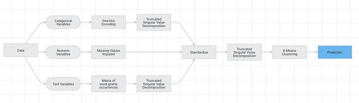

本文主要分享
- 传统聚类算法
- LLM与嵌入算法
- 嵌入算法聚类
- 启发； LLM的其他用法
聚类是一种无监督机器学习技术，旨在根据相似的数据点的特征将其分组在一起。使用聚类成簇，有助于解决各种问题，例如客户细分、异常检测和文本分类等。尽管传统的聚类技术被广泛使用，但它仍然面临着挑战。 今天代码很少，也没有实验数据， 主要是偏思路分享。
一、编码挑战
1.1 字段单位不统一
我想在本文中解决的主要挑战是选择如何编码或转换输入特征。一般来说，您需要将每个特征转换为相同的比例，否则，聚类模型将在特征之间分配不成比例的权重。例如， 假设数据中有重量 weight1 、 weight2 两个字段，weight1单位是市斤，而weight2单位是公斤。如果不首先对这些测量进行标准化，即使实际重量相同，我们的模型也会推断出以市斤为单位（对于类似重量的物体）测量的重量差异大于以公斤为单位的差异。
现实中，数据集中不会出现对一个信息使用两种单位进行度量。使用这个例子， 只为说明数据中不同字段分布不同，训练模型时不同字段承载的权重也不一样。为了减轻这个问题，一般是训练之前先将字段标准化。
1.2 字段之间存在相关性
让我们使用颜色组成的特征作为另一个示例。通常，许多人会选择将此特征 one-hot 编码到 n-1 个附加列中，其中 n 是唯一颜色的数量。虽然这有效，但它忽略了颜色之间的任何潜在关系。
为什么是这样？让我们考虑数据集中的一个特征具有以下颜色：红色、栗色、深红色、猩红色和绿色。如果我们要对该列进行 one-hot 编码，我们将得到一个如下所示的数据帧：
在 欧几里德距离空间 中，任意两个记录(行)之间的距离是相同的。
import numpy as np
def euclidean_distance(vec1, vec2):
if len(vec1) != len(vec2):
raise ValueError("vecs must have the same length.")
squared_differences = [(a - b) ** 2 for a, b in zip(vec1, vec2)]
distance = np.sqrt(sum(squared_differences))
return distance
red = np.array([0, 0, 0, 1, 0])
maroon = np.array([0, 0, 1, 0, 0])
green = np.array([0, 1, 0, 0, 0])
print(euclidean_distance(red, maroon))
print(euclidean_distance(red, green))
Run
1.4142135623730951
1.4142135623730951
二、有更好的办法吗？
当然， 红色 和 栗色 是两种不同的颜色，但为了我们的聚类算法，我们其实不希望euclidean_distance(red, maroon) 与 euclidean_distance(red, green) 是相等的。
那么该如何解决这个缺点呢？
如果您阅读这篇文章的标题，我相信您可能已经get到本文的ieda……我们将结合 大语言模型 (Large language model, LLM)， 将每条记录字段和数值整理成一个字符串， 并通过LLM获得每条记录对应的嵌入表示。
对于此示例，我将使用 Huggingface 中的句子转换器库以及我围绕工作申请综合创建的数据集。
让我们从句子转换器开始。该 LLM 的工作原理与 BERT 类似，只不过它经过专门训练以在句子级别而不是单词或标记级别输出嵌入。这些句子级嵌入可以更好地捕获含义，并且计算速度更快。
from sentence_transformers import SentenceTransformer
from sentence_transformers.util import cos_sim
#使用hugginface，需要科学上网
model = SentenceTransformer(r"sentence-transformers/paraphrase-MiniLM-L6-v2")
def prompt_text(x):
#每条记录整合为一个字符串
p_text = (
f"Age: {x['Age']} Gender: {x['Gender'].lower()} Role: {x['Role']} "
f"Hiring Department: {x['HiringDepartment']} "
f"Travel Preference: {x['TravelPreference']} Extracurriculars: {x['ExtraCurriculars']} "
f"Distance From Home: {x['DistanceFromHome']} "
f"Internships: {x['Internships']} Education Level: {x['EducationLevel']} Education Field: {x['EducationField']} "
f"Summary: {x['Summary']}"
)
return p_text
def output_embedding(text):
#返回的嵌入表示的尺寸(记录数, 384)
#sentence-transformers/paraphrase-MiniLM-L6-v2 模型的词向量维度是384
embd = model.encode(text)
return pd.DataFrame(embd.reshape(-1, 384))
def preprocess_text(x):
text = prompt_text(x)
embd = output_embedding(text)
return embd
df['combined_text'] = df.apply(lambda x: preprocess_text(x), axis=1)
我们的数据集包括有关求职者的信息，例如招聘部门、职位、年龄和教育水平等特征。这是一个数据截图：
我们的目标是将所有求职者分为不同的簇(可以理解为群体)。
让我们看看如何将句子嵌入应用于每个求职者。第一步是通过将所有功能连接到一个字符串中来创建单个文本prompt。
Age: 28.
Gender: male.
Role: Research Scientist.
Hiring Department: Research & Development.
Travel Preference: Travel_Frequently.
Extracurriculars: nan.
Distance From Home: 4.
Internships: 9.
Education Level: 3.
Education Field: Engineering.
Summary: As you can see, I am very dedicated and I am ready to start at your firm immediately.
将原记录(行)转为如上图所示的文本，之后调用 SBERT LLM 检索文本对应的嵌入向量。为方便展示，这里使用 dataframe.style 功能来突出显示低值和大值，以使表格更容易扫描：

三、用嵌入编码有什么益处？
之前讲了传统聚类算法使用one-hot编码方式的不足，但没有解释用嵌入表示的益处。 先不讲理论， 就像探索颜色编码，我们看一个例子。 我想测量 Role (岗位角色) 的相似程度， 我更倾向于用余弦相似度，而不是欧几里德距离， 请问这其中的差异是？
- 欧几里得距离 是两点之间几何距离的度量，而 余弦相似度 度量向量的方向。
- 欧几里得距离对向量的大小敏感，而余弦相似度则不然。
- 欧氏距离的值范围从 0（相同向量）到无穷大，而 余弦相似度的范围从 -1（完全不相似）到 1（完全相似）
让我们选择两个岗位角色：销售代表（sales representative）和销售主管(sales executive)。
-
使用 one-hot 编码的 销售代表 和 销售主管 的余弦相似度为 0.5，这意味着他们有些相关。这是有道理的，因为他们都是销售角色。
-
使用嵌入编码的余弦相似度为 0.82。它们的相关性要高得多。这更有意义，因为销售代表和销售主管在实践中是极其相似的角色。
3.1 传统的聚类
传统聚类算法大致流程如下图所示，

原文作者实验使用K=3的聚类算法，但k如何设置不是最关键的点。 我们的聚类模型中最重要的字段是求职者的个人总结（Summary），其次是 招聘部门（HiringDepartment）、是否喜欢旅行(TravelPreference)。
为了更好的理解3个簇， 我们输出了数据汇总，每个数值字段平均值 及 非数值字段的高频项。
按道理聚类算法的结果应该不同簇之间的差异尽可能的大。糟糕的是不同簇之间的， 年龄(Age)、实习次数(Internships) 差异很小，而更糟糕的是招聘部门(HiringDepartment) 和 岗位角色(Role) 完全相同。
3.2 嵌入的聚类
使用嵌入编码的聚类算法流程如下图所示。与传统 聚类方法相比，使用嵌入的流程只需处理数字特征， 因为由求职者提示信息(代码里的prompt_text)转化来的嵌入是严格数字化的。
在这里，我们不能像上次那样直接计算字段重要性。我们有数百个难以理解的特征，它们的重要性各不相同，我们无法理解。那么我们该怎么办？让我们训练另一个模型（这次是有监督的三类分类模型），使用原始特征集来预测嵌入模型生成的类标签。这样就可以以同类的方式重现字段重要性。结果如下
我们找到一种新的嵌入表示来编码求职者信息， 并运算出了聚类结果。
从统计信息(上图)中可以看出，不同簇之间的差异变的更加清晰。 使用嵌入编码， 让更多申请销售岗位的的销售主管划分到cluster2， 让更多申请研发岗位的的科学家划分到cluster1 和 cluster3.
前文内容翻译整理自
https://medium.com/@swansburg.justin/how-to-use-llms-to-build-better-clustering-models-9b17a5491bb4
四、启发
读完以上内容，大邓想到一个问题， 假设 没有简历系统，没有大数据，求职者与面试官坐在现场， 数据就是面试过程中的交流， 而交流必然通过话语这一媒介。 例如求职者的个人信息
“大家好，我叫张三， 今年24岁，哈尔滨人。本科毕业于哈尔滨工业大学，市场营销专业。 我是一个很外向的人，对销售很感兴趣，在大学期间摆了很多地摊。很希望获得贵公司的机会，让我在营销岗位上大发异彩。”
面试期间，记录人员将该哈尔滨张三的个人信息被整理为
name: 张三
age: 24
city: 哈尔滨
edu: 哈尔滨工业大学
major: 市场营销
experience: 摆摊
summary: 我是外向的人，对销售很感兴趣。
求职者的信息汇总成xlsx， 每个人的信息都或多或少的被压缩了。 这种表示方式， 在小规模时， 求职者的总结summary还是有很大信息量的，能够让面试者回忆起当时的场景和情景。但是当求职者的规模上升到几千上万， 备注note信息这种很重要的信息反而无法利用。
使用大语言模型LLM，将文本提示转化为嵌入表示。我们可以将LLM看成是一个察言观色，见微知著，明察秋毫的智者。 这个智者可以
- 分类
- 提取信息
- 补全
- 相似性
- …
以往缺失数据， 用插值或者其他技巧， 现在我们可以借助LLM， 只有有其他字段残存的微弱线索， LLM就能帮我们补全缺失值。
4.1 分类
如图所示， 对于很多短文本， 我们可以推断话题，也可以推断情绪。
https://huggingface.co/morit/chinese_xlm_xnli
4.2 提取信息
假设有一些信息存储在文本中， 可以用正则表达式提取， 下面的例子用正则会很难设计， 但用LLM很简单。
https://huggingface.co/luhua/chinese_pretrain_mrc_roberta_wwm_ext_large
4.3 补全
填充缺失值信息
4.4 相似性
当然LLM功能还有很多，大家可以自己探索探索